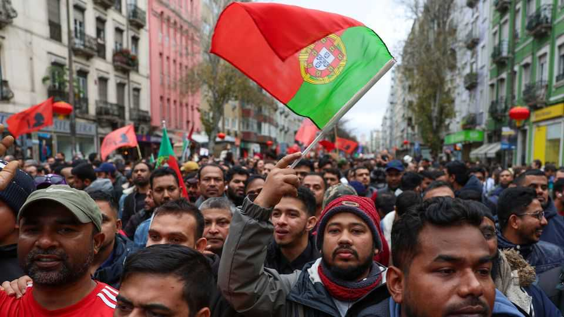
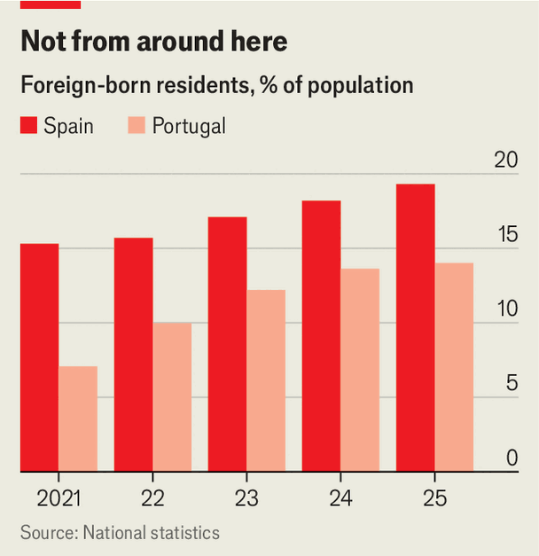

Portugal has limited immigration, and Spain may follow
The wave of immigrants in both countries looks politically unsustainable

Oct 15th 2026
Nestled beneath Lisbon’s former Moorish quarter, the Rua do Benformoso is a winding street of decaying buildings faced with azulejos (decorative tiles). It is lined with Indian food shops and stores selling hookah pipes and mobile phones. Piedade, a Portuguese woman who has lived here for over 60 years, dislikes what has happened to it. “There’s drugs and crime,” she says. “I stay inside at home.”
The Rua do Benformoso has become the symbol of a massive wave of immigration. The Portuguese are accustomed to migrants from their former colonies in Brazil and Africa, who speak the language and integrate fairly easily. But between 2017 and 2024 more than 1.1m immigrants took the foreign-born population from 4% to 14% of the total. The new arrivals included 250,000 South Asians, mainly young single men. Many of them speak almost no Portuguese. Immigration became a top public concern. Chega (“Enough”), a new populist right-wing party, won 23% of the vote in a parliamentary election in 2025.

“We were not in control,” says António Vitorino, a Portuguese former European commissioner. It became crucial, he says, to “rebuild the credibility of the migration-regulation system”. The centre-right government of Luis Montenegro, which came to office in 2024, set out to do this. It required immigrants to get appropriate visas, re-established a border force, stretched the time to obtain citizenship to between seven and ten years, and restricted family reunions. It also introduced fast-track visas for key workers. “We’re not a closed-door, ‘remigration’ government,” says António Leitão Amaro, the minister responsible for the reforms. Net migration has fallen from 270,000 a year to 60,000.
Across the border in Spain, in contrast, the Socialist prime minister, Pedro Sánchez, has defied the European Union’s consensus on tighter controls. Spain too has seen a spike in immigration, with 3.1m coming since 2021. In 2026 the foreign-born population hit 10.3m, over 20% of the total. Mr Sánchez has stressed not only Spain’s humanitarian values but the benefits of immigration to economic growth. It helped that around half of the immigrants are Spanish-speakers from Latin America.
Earlier this year Mr Sánchez irritated other EU governments by announcing an amnesty for those without papers. The government expected 500,000 to apply; 1.2m did. Portugal, too, plans to regularise up to 800,000. But unlike in Spain, applicants are interviewed individually and 45,000 have been rejected, says Mr Amaro.
Immigration has strained both countries’ public services. Lisbon suffered a shortage of school places this year. In Spain teachers say immigrant children may lack language skills or arrive with a learning deficit. Many schools in Madrid are seen as immigrant ghettos; teachers seek jobs elsewhere. In the health service, waiting lists for operations are at record levels.
The most dramatic impact has been in housing. Mr Sánchez called a snap general election for November 29th on the issue. But the move may rebound. Critics point out that Spain’s overheated housing market is a result of immigration combined with a lack of new building. And the memory of a surge of over 80,000 migrants into Ceuta, a Spanish exclave in north Africa, in late July is still fresh (10,000 are still there).
Spain’s consensus in favour of immigration is breaking. Polls show a majority think there are too many immigrants. Vox, an anti-immigrant populist party, has risen to around 19% in the polls. But immigrants continue to arrive. “They know they can come and sooner or later they will be legalised,” says María Miyar, a sociologist at UNED university. Earlier this year Teresa Garcia-Milà of the Cercle d’Economia, a business group in Barcelona, argued for “a fundamental debate we haven’t had” about “our real capacities of reception and integration”. Cutting immigration can stimulate the economy in some ways: Portugal’s previous lax rules meant “companies didn’t have to improve their efficiency because they got cheap labour,” says Mr Amaro.
In Spain, with polls showing the right likely to win the election, policy seems certain to change. Alberto Núñez Feijóo, the leader of the conservative People’s Party, wants a points system and quotas for immigration and priority for Latin Americans. That sounds like the Portuguese approach. Iberia may soon no longer be an exception to the European norm.■